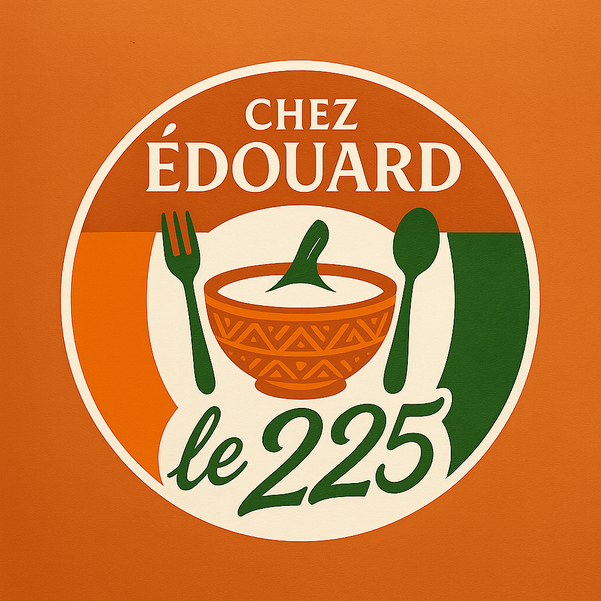

Structurer une idée pour la faire avancer
BK accompagne le positionnement, la stratégie digitale, la structuration d'un projet et la mise en cohérence des différents leviers.
Voir tous les tarifs et les offresDevis détaillé avant tout engagement.
Comprendre, structurer, décider
Cinq étapes, dans cet ordre. Chacune sert à rendre la suivante plus simple.
En savoir plus
Concrètement, un échange direct (appel ou visite) suffit souvent à cette étape : vos chiffres s'ils existent, vos retours clients, le temps que vous passez sur les tâches qui ne rapportent pas, l'image que vous donnez aujourd'hui face à celle que vous voulez donner. Aucun questionnaire générique — les questions changent selon que vous êtes un commerce, une association ou une TPE en création.
En savoir plus
Le résultat est écrit noir sur blanc : un périmètre daté, avec ce qui entre dans le projet et ce qui en sort explicitement — pour éviter qu'un projet grossisse en cours de route sans que personne ne l'ait décidé. Les risques connus (délai serré, budget contraint, dépendance à un tiers) sont nommés avant de commencer, pas découverts en chemin.
En savoir plus
En pratique, deux ou trois options sont posées côte à côte : ce que chacune implique en budget, en délai et en résultat attendu. Pas de recommandation unique imposée d'en haut — l'idée est que vous compreniez le compromis derrière chaque choix, pour trancher en connaissance de cause plutôt que de faire confiance à l'aveugle.
En savoir plus
Chaque chantier a un responsable identifié (BK ou vous), un jalon et un point de validation avant de passer au suivant. Vous voyez l'avancement au fur et à mesure — pas seulement un livrable final après plusieurs semaines de silence.
En savoir plus
Une fois en ligne ou en place, un projet continue de rencontrer la réalité : des retours clients, une saison qui change la donne, un concurrent qui bouge. Le suivi consiste à ajuster ce qui doit l'être, au rythme réel de votre activité — pas selon un calendrier de maintenance figé à l'avance.
Six angles pour y voir clair
Selon la situation, on en active un seul — ou plusieurs ensemble.
État des lieux de votre présence : site, image, réseaux, outils, visibilité.
En savoir plus
Le diagnostic passe en revue ce qui existe déjà — votre site s'il y en a un, votre fiche Google, vos réseaux, vos outils du quotidien — et ce qui manque. Le rendu est un constat lisible, pas un audit de 40 pages que personne ne lit : ce qui fonctionne, ce qui freine, et par quoi commencer.
Clarifier l'offre, l'image et le message — pour qui, pourquoi, en quoi différent.
En savoir plus
Trois questions structurent ce travail : à qui vous adressez-vous précisément, qu'est-ce qui vous distingue de la structure équivalente à côté, et ce message est-il le même partout où l'on vous trouve (site, réseaux, devanture, bouche-à-oreille) ? La plupart des flous viennent d'un positionnement jamais formulé clairement.
Relier présence digitale, contenus, outils et objectifs dans un même plan.
En savoir plus
Plutôt que d'être présent partout sans priorité, la stratégie choisit les canaux qui comptent réellement pour votre activité et votre budget, et fixe ce que chacun doit produire comme résultat — visibilité, contact, vente — pour que chaque action se juge sur un objectif clair.
Périmètre, étapes, priorités et budget réaliste avant de lancer quoi que ce soit.
En savoir plus
Le livrable est un cahier des charges concret : ce qui est inclus, un calendrier par étapes et une enveloppe budgétaire réaliste — pour que le prestataire (BK ou un autre) sache exactement ce qu'il doit produire, et que vous puissiez comparer des devis sur la même base.
Qui fait quoi, avec quels outils, et ce qui peut être automatisé.
En savoir plus
On regarde les tâches répétitives qui prennent du temps sans valeur ajoutée — relances, rappels, mises à jour de fichiers, publications — et ce qui peut être repris par un outil ou un Worker IA, pour que votre temps aille vers ce qui compte réellement.
Une feuille de route datée, avec des étapes que vous pouvez suivre.
En savoir plus
Le format reste simple à utiliser au quotidien : des étapes datées, un responsable par étape, et des points de passage pour vérifier que le projet avance comme prévu — sans jargon de gestion de projet inutile pour une petite structure.
Le conseil ne s'arrête pas au document
Une recommandation qui reste dans un fichier ne change rien. Chez BK, le conseil débouche sur des réalisations : un site refondu, une identité clarifiée, des contenus produits, des outils reliés entre eux.

Un besoin précis ?
Décrivez votre objectif, votre activité ou votre projet. BK peut intervenir sur une expertise seule ou réunir plusieurs compétences.